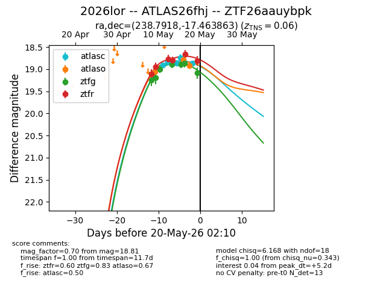
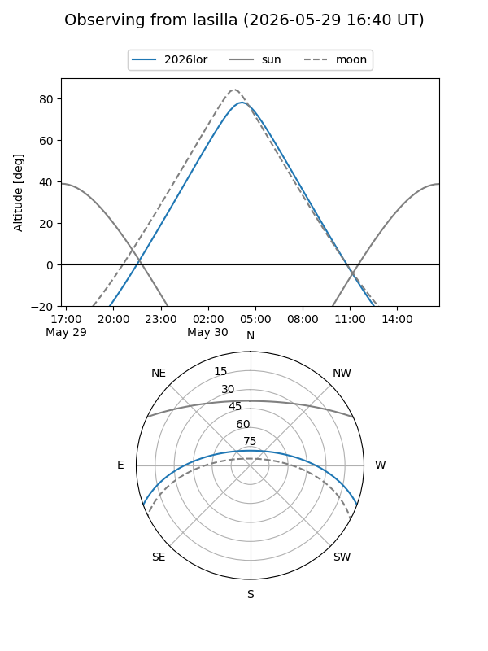
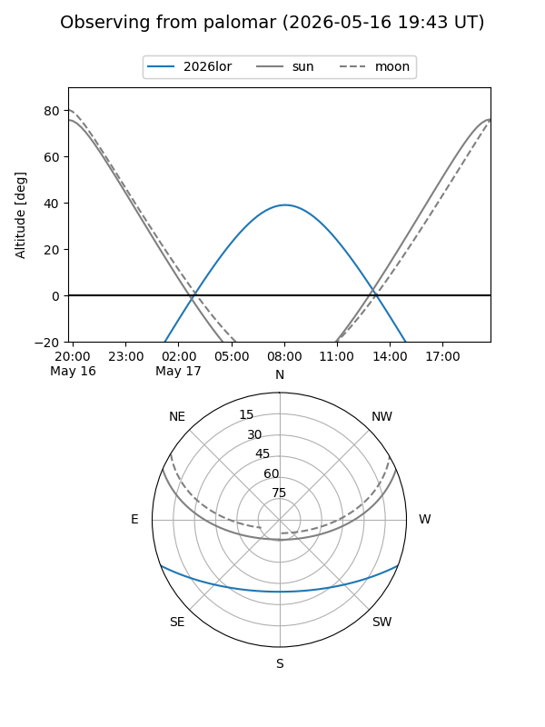
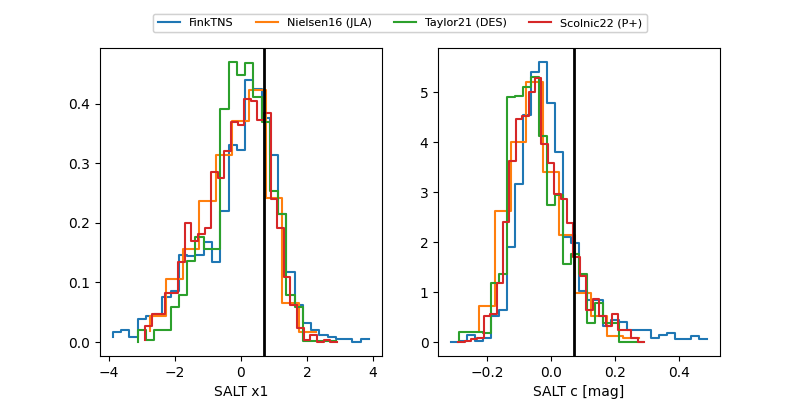

2026lor
Target 2026lor at 2026-05-20 02:12
Aliases and brokers:
FINK: link
Lasair: link
ALeRCE: link
TNS: link
YSE: link
alt names
ZTF26aauybpk (ztf,fink_ztf)
2026lor (tns,yse)
ATLAS26fhj (atlas)
Coordinates:
equatorial (ra, dec) = 238.7918,-17.46386
equatorial (HMS+DMS) = 15:55:10.03,-17:27:49.91
galactic (l, b) = (353.2031,+26.97614)
Flags:
confirmed ia
Photometry:
last atlasc=18.86, atlaso=18.91, ztfg=19.09, ztfr=18.81
5 atlasc, 4 atlaso, 7 ztfg, 6 ztfr detections
Lightcurve

Visibility


Additional plots
